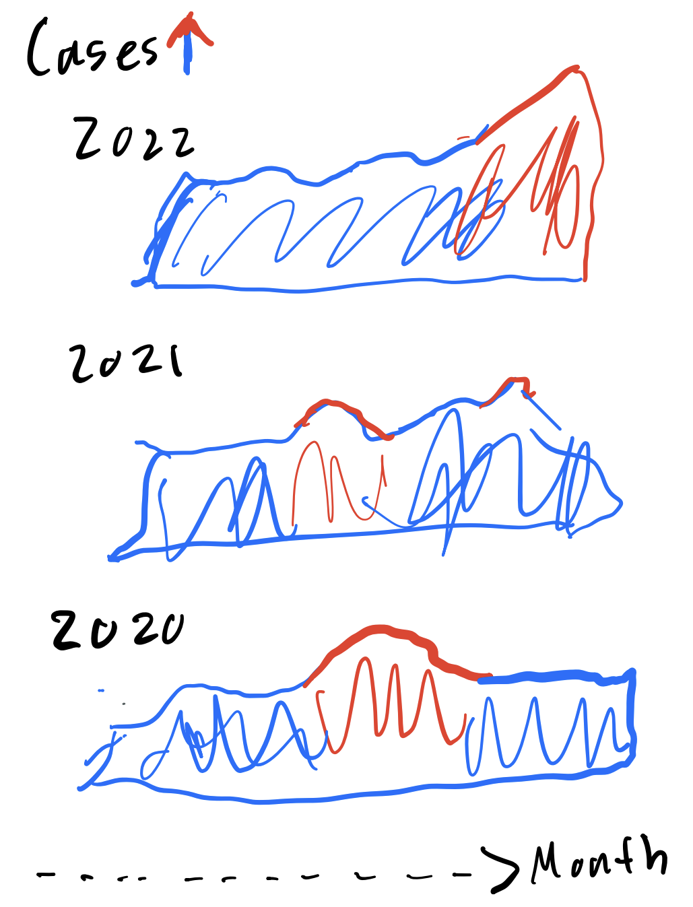
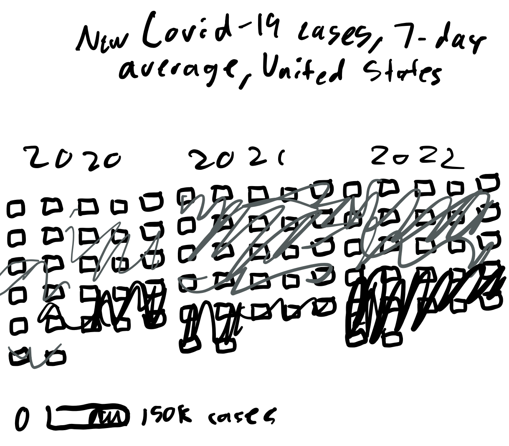
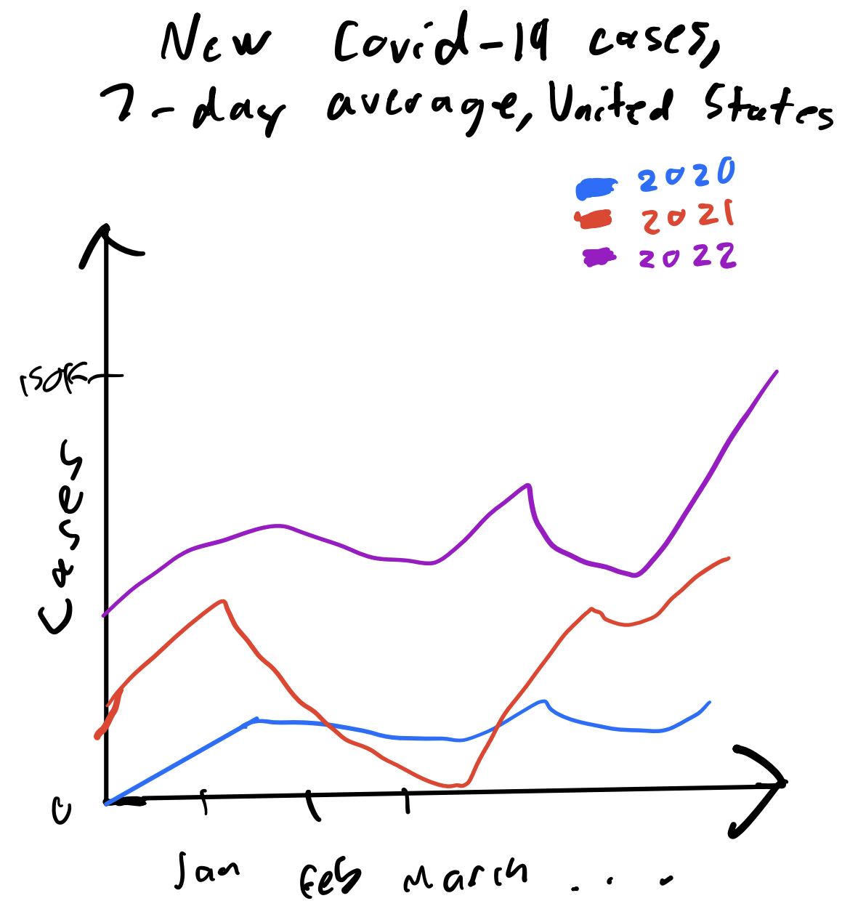
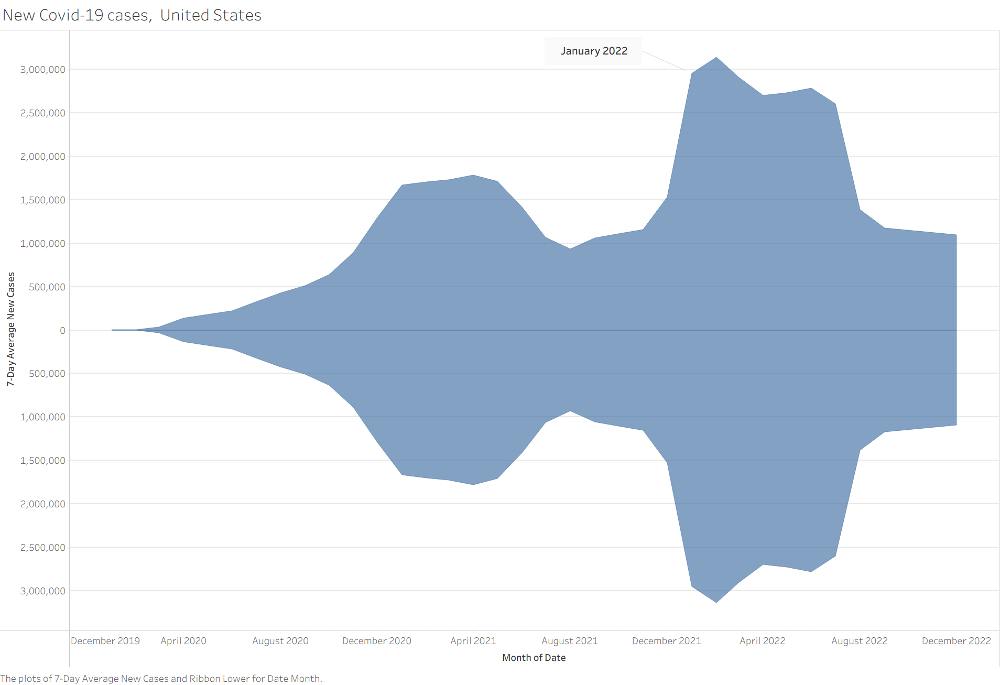

Reading & Critique

Insights about the data/visualization:
- The highest number of COVID-19 cases (7-day average) in history are being recorded going into January 2022 potentially due to the Omicron variant
- The number of COVID-19 cases started to lessen in Spring 2021 coming into a trough in Summer 2021 (perhaps vaccine?)
- After the trough in Summer 2021, COVID-19 cases grew significantly once again (new variant?)
- After the local peak in Fall 2021, COVID-19 cases fell again perhaps suggesting a vaccine for the new variant
Design Critique:
The radial design to encode time is actually a super clean way to map time over several years and months. Going around the "clock" while expanding outwards makes it very intuitive to understand what year and month we are in due to the cyclical pattern. It's also even continuous, so we can see what fraction through the month the data peaks or troughs! Overall, the graphic does a pretty good job of delivering the takeaway messages of WHEN COVID-19 cases peak and trough. However, the graphic still has its issues and the first is that encoding the magnitude of cases through the size of the line comes with quite harsh limitations. First of all, as the dynamic range of the number of cases (i.e. the highest peak - the lowest trough) increases, the visual completely breaks down due to everything needed to be scaled down to fit into the radial model, at which point it will become difficult to even analyze the relative size differences. Additionally, the labeling is quite unclear. The caption for "7-day average" took me a second to process as it has a line towards a specific point in time which is confusing. Thus, that caption should be in the title instead. Furthermore, the legend is very hard to decode as the quantitative data only makes sense for an audience that has read the context article and understands that around Janaury 2022 is when 150K cases will be the magnitude. Otherwise, quantitative encoding makes no sense (even with this information it's impossible to quantitatively break down each time period in the chart).
Visualization Sketches

Design Rationale for Sketch 1:
- Preserves the indicator of thickness clearly representing peaks and troughs in the original visualization
- Does not scale well as needs a sub chart for every new year
- Temporal information is lost without marking months
- Can be hard to compare # of cases across different years

Design Rationale for Sketch 2:
- Temporal information is very specific, can pinpoint to the exact WEEK's intensity in cases
- Since the shading is a gradient, hard to gauge quantity of cases
- Difficult to see broader patterns as the boxes provide visual seperation

Design Rationale for Sketch 3:
- Can gauge quantity of cases very well
- Clearly shows the patterns for each year against eachother making year by year comparison easy
- Kind of subpar when it comes to the main takeaway I want, specifically highlighting the specific peaks and troughs
Final Visualization Design

Final Writeup
My redesign gives primary emphasis to the temporal rhythm of peaks and troughs. The core message I aim to communicate is that U.S. COVID-19 cases rose and fell in distinct, recurrent waves, with visually pronounced expansions and contractions over time. To foreground this oscillation, I encoded a a continuous horizontal time axis and represented magnitude through ribbon thickness rather than line height alone, taking inpsiration from how thickness is used in my first sketch. I used a calculated field to aggregate through a running 7-day average. The symmetric “wave band” makes peaks appear as visibly swollen segments and troughs as narrow constrictions, reinforcing the pandemic's pulse like pattern. By centering the ribbon around a horizontal baseline and formatting the axis symmetrically, thickness becomes the dominant perceptual cue, allowing viewers to quickly identify where surges crest and where cases recede. I retained a muted, single-hue fill to avoid over encoding magnitude. I took the time encoding from mine line chart sketch which preserves chronological continuity and enables clearerest comparison of relative magnitudes, especially given the large dynamic range of case counts. I also explicitly labeled January 2022 as a turning point, since that's one of the main points of the article.
This redesign directly responds to my critique of the original visualization's scaling and labeling issues. By moving away from the radial layout, I avoid the compression problem that happened as case counts increased and no longer have to fit large magnitudes into a circular frame. The linear axis makes absolute case levels easier to read, and the subtitle clearly explains that ribbon thickness represents the 7-day average of new cases. This removes much of the confusion around what the numbers actually mean. At the same time, my redesign gives up some of the intuitive cyclical feeling created by the radial clock metaphor. Through the process of critique by redesign, I realized there is a tradeoff between showing time as a cycle and making magnitudes easy to compare. The clock visualization in the original is just so clean and intuitive for encoding time. However, it just sacrifices too much in magnitude clarity. In my final design, I chose to prioritize clarity and readability. The ribbon makes it much easier to see where cases peak and where they fall, which better communicates how dramatically COVID-19 cases rose and declined over time.